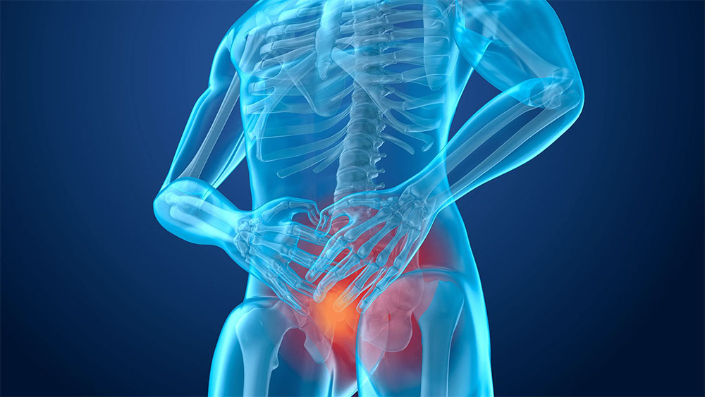

بالنسبة للمبتدئين ، بعض الإحصاءات: تبين أن 7 من كل 10 رجال تزيد أعمارهم عن 20 عامًا تعاني بشكل دوري من مشاكل في البروستاتا. قد يكون هذا بمثابة ضعف عام ، وألم في الفخذ ، الحافز المتكرر للتبول الذي لا يجلب الراحة ، فقدان جزئي أو كامل حول الانتصاب ، سرعة القذف ، انخفاض الحساسية ، عدم القدرة على الإكمال الجماع .
البروستات سبب الطلاق والفضائح !

مرحبا أيها القراء الأعزاء!
قررت اليوم أن أختار موضوعًا دقيقًا جدًا وفي نفس الوقت مهمًا - صحة الرجل
. كل يوم أتلقى عدة طلبات وطلبات للحديث عن الأدوات الحديثة
علاج التهاب البروستاتا واستعادة صحة الرجل
.
الشيء المدهش هو أنه في أغلب الأحيان
يتم طرح هذه الأسئلة من قبل النساء اللواتي يرغبن في مساعدة الرجال بجانبهن على التعامل معها
هذه مشكلة خطيرة. غالبًا ما يميل الرجال إلى التقليل من أهمية الشكاوى حتى النهاية
عندما تظهر الحاجة إلى العلاج ، يستمرون في تأجيل الزيارة
مكتب الطبيب. هذا أمر مفهوم ، لا أحد يريد مناقشة شيء حميمي مع شخص غريب
شخص حتى لو كان طبيبا. لذلك سأحاول اليوم إخباركم بالسرعة والأمان
استعادة شباب البروستاتا دون تدخل اخصائي كيمياء وعمليات.
لسوء الحظ ، تجدر الإشارة إلى أن الرجال المعاصرين لديهم مشاكل في البروستاتا بدأت تحدث تظهر في وقت سابق وفي وقت سابق. في هذه الحالة يحدث الضعف الجنسي في 100٪ من الحالات , أي رجل يعاني من التهاب البروستاتا. بالنسبة للبعض يحدث في وقت سابق ، بالنسبة للآخرين في وقت لاحق ، ولكن دائما ودائما .
يتطور سرطان البروستاتا في المراحل المتأخرة من التهاب البروستاتا ، ولكنه ليس ظاهرة مفاجئة أيضًا. الرجال الذين لا يعالجون التهاب البروستاتا ويسحبونه لسنوات يلعبون بالنار "". إذا كنت تريد أن تعيش طويلًا ويكون لديك انتصاب طبيعي ، فأنت بحاجة إلى علاج التهاب البروستاتا. في نفس الوقت في أقرب وقت ممكن. "" في أقرب وقت ممكن
كيف تتخلص من
التهاب البروستاتا واستعادة صحة الرجل في اي عمر؟ كيف يمكنك التعافي ؟ "

من المثير للاهتمام أنه في عام 2021 كان هناك دواء ثوري حصريًا
في وقت قصير ، يعيد وظيفة غدة البروستاتا ، ويزيل عملية الالتهاب ويؤدي إلى
حتى الشفاء التام من التهاب البروستاتا المزمن مع زيادة ملحوظة في الفاعلية و
مدة الجماع. اسم هذه الأداة
. هذا دواء فريد من نوعه
تم تطويره بواسطة فريق من الخبراء من جميع أنحاء أوروبا
.

يتم إطلاق برنامج خاص في بلدنا بالمهمة والهدف التاليين: إعطاء كل شخص الفرصة ، بغض النظر عن وضعك المالي ، لحل مشاكلك مع التهاب البروستاتا في وقت مبكر سوف يتطورون إلى شكل أكثر خطورة. كجزء من هذا البرنامج ، جنبًا إلى جنب مع الشركة المصنعة ، يتم تقديم بسعر بخصم 50٪!
فروغ درست ہے
تم إجراء دراسات واسعة النطاق تظهر نتائج ممتازة:
1. فاعلية أنظمة و على الطريقة القياسية
(العدد المتبقي جاهزًا بشكل عام على بورنيت في مجموعة من 100 صورة علاجية ، يوفر مسارًا
للعلاج) أنظمة بنسبة 98٪ ".
2. تغيب في العرض
درب المرض قبول سبيران للدواء (للنتائج من الملاحظة لأشهر قطب) نحن 99٪
3. بعد أسبوع من العلاج بالدواء ، يلاحظ جميع المرضى زيادة ملحوظة في الرغبة
الجنسية وقوتهم.
4.
الدواء لديه القدرة على زيادة مدة الجماع بنسبة 95٪ من
شارك في الاختبار
5- رد فعل الصفحة غير المرغوب فيه ، بما في ذلك الحساسية
ردود الفعل ، لا حد ذاتها الملاحظة
.
6. دواء ثوري
معروف
حول العلاج الرائد في مكافحة التهاب البروستاتا
تحذير! كانت هناك حالات لبيع المنتجات المقلدة "وهي ليست لديهم أي خصائص علاجية! ولهذا السبب نضع نموذجًا لمشاهدينا خصيصًا لطلب الأموال""وهي ليست لديهم أي خصائص علاجية! ولهذا السبب نضع نموذجًا لمشاهدينا خصيصًا لطلب الأموال" من عند المسؤول الوحيد موزع! من خلال الطلب هنا ، نضمن لك الحصول على منتج عالي الجودة بأفضل سعر.
للمشاهدين والقراء سمير المترجي قدمت عرض خاص , ، في حيث يمكنك شراء بخصم 50٪. ليستخدم، انقر فوق الحصول على بخصم 50٪ .
تعليقات:
مع خالص التقدير ، سمير